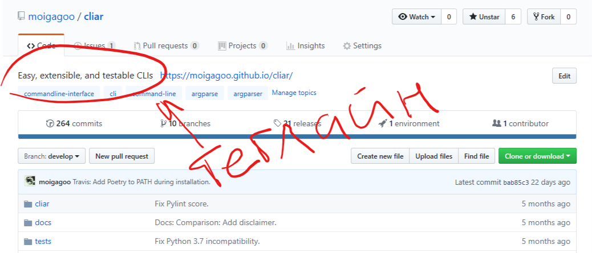
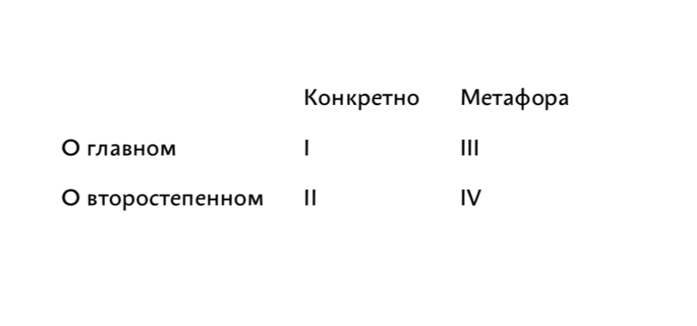

Структура документа
Разные части документа имеют разный визуальный вес: картинки заметнее текста, крупный текст заметнее мелкого. Глаз бессознательно движется от более заметных элементов к менее заметным. Используя это, мы помогаем читателю находить важную информацию там, где он её ожидает.
Рассмотрим, из чего состоит документ, и в каком порядке расставлять его части.
Элементы документа
Абзац
Абзац — это набор предложений. Если предложение — это мысль, то абзац — последовательность мыслей. В абзаце из предыдущего вытекает следующее. Когда последовательность не получается продолжить, считайте абзац завершённым и начинайте новый. Финальный вывод абзаца назовём макромыслью.
Как в одном предложении должна быть одна новая мысль, так в одном абзаце должна раскрываться одна новая макромысль.
Заголовок
Заголовок — второй по заметности на странице после иллюстрации. В большинстве технических статей картинок нет, поэтому важно уделить особое внимание заголовку. Удачный заголовок мотивирует на чтение всей статьи. Неудачный — смутит и отпугнёт.
Задача заголовка — вызвать интерес. Если заголовок пишется не для решения этой задачи, для галочки, просто как жирный текст вверху статьи, это заголовок только по форме, но не по содержанию. Истинный заголовок — это заголовок по содержанию.
Есть два типа заголовков: назывной и трансзитивный.
Назывной — это о чём статья: «Работа с памятью в Rust». Если ключевые слова интересны читателю, он начнёт читать.
Транзитивный — это суть статьи: «В последней версии Rust появилась новая функция для работы с памятью». Транзитивные заголовки лучше привлекают внимание.
Среди них нет правильного и неправильного, оба хороши на своих местах.
Заголовки в документе должны образовывать осмысленное оглавление:
# Vim для новичка
...
## Как выйти
...
## Популярные шорткаты
...
## Популярные команды
...
Обратите внимание, что «Как выйти» — не вопрос. Вопрос в заголовке допустим, если вы задаёте вопрос читателю. Если вы даёте ответ, то заголовок — это придаточное предложение в составе сложноподчинённого.
Теглайн
Теглайн — это выделенная строка под заголовком, раскрывающая его смысл. Лично мне нравится комбинация «заголовок + теглайн», поэтому я стараюсь их писать.
Пример теглайна, который вы точно видели — поле Description на Гитхабе:

Иллюстрация
Иллюстрации — самые заметные части документа. Иллюстрация — это чаще всего картинка, но это может быть и виджет, и таблица, и пример кода — всё, что иллюстрирует мысль.
Иллюстрация может привлекать и пояснять. В первом случае не бойтесь ставить её повыше, можно даже выше заголовка. Во втором случае иллюстрация следует за абзацем, который она иллюстрирует.
Tip
Будьте аккуратны с привлечением внимания. Когда на странице больше одного элемента пытаются захватить внимание, получается конфликт.
Иллюстрация для привлечения внимания хороша в одном экземпляре на уровне документа. В модулях лучше использовать только поясняющие иллюстрации.
Есть четыре уровня иллюстрации, от хорошего к плохому:
-
Показывает непосредственно то, о чём идёт речь. Такая иллюстрация работает вместе с текстом, говорит о сути.
-
Показывает то, что упоминается в тексте, но текст не об этом. Текст про Vim, на картинке «типичный пользователь Вима».
-
Метафора того, о чём идёт речь.
-
Метафора того, о чём упоминается.

Врезка
Врезка — это выделяющийся из общего потока кусок текста. Во врезку хорошо ставить заметки, предупреждения, полезные факты.
Info
В журнальной вёрстке врезки бывают ещё и на полях. Тогда их называют «выносами». Техписам такая вёрсточная роскошь только снится :-)
Врезка — элемент параллельного изложения. Этим она отличается от иллюстрации, которая встраивается в текст.
Список
Списки бывают нумерованными и ненумерованными. Нумерованный список имеет смысл в двух случаях:
- порядок элеметнов важен,
- к пунктам будут адресные отсылки позже по тексту.
В остальных случаях нумерация только сбивает:
Великая Французская революция заявила о трёх ценностях:
- свобода,
- равенство,
- братство.
Почему «свобода» имеет номер 1? Она важнее всех?
Без номеров ясно, что элементы списка равнозначны:
Великая Французская революция заявила о трёх ценностях:
- свобода,
- равенство,
- братство.
Порядок элементов
На уровне документа элементы ставим в том порядке, в котором их найдёт глаз:
Заголовок → Теглайн → Иллюстрация → Модули
Модуль — это часть документа под одним заголовком называется. Модули — самодостаточные части документа. Модуль — это документ в документе, исчерпывающе покрывает тему.
Модули в документе должны быть однородными. Сначала пишете один модуль, а остальные пишете по его образцу.
Проверенный порядок элеметнов в модуле:
Заголовок → Иллюстрация → Абзацы → Иллюстрация или врезка → ↓
↑_______________________________↓
Практика
Напишите статью на три модуля о том, как работает http. Читатель — студент, изучающий протоколы. Видел сайты, может открыть инспектор, не боится новых слов, но ещё ничего не знает о протоколах передачи данных.